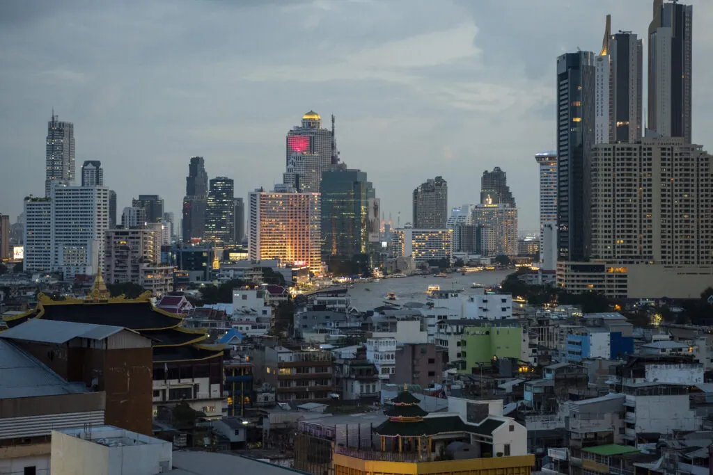
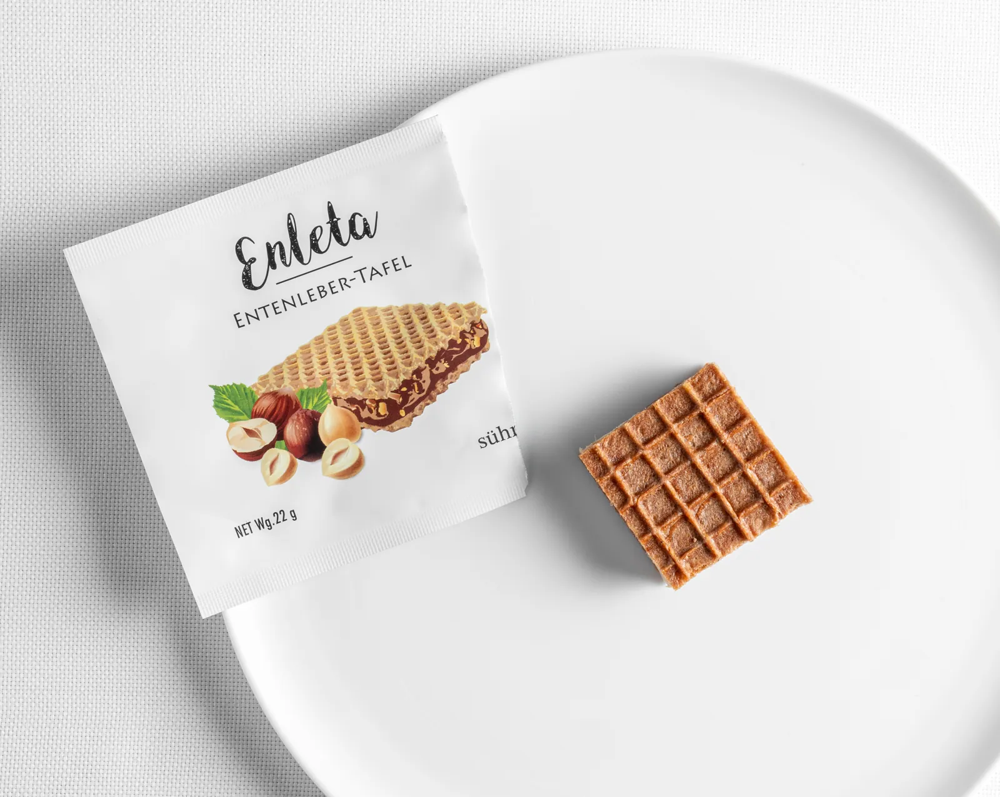
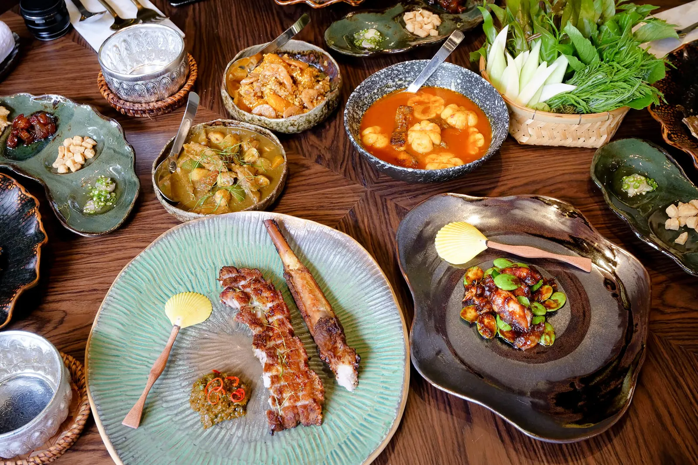
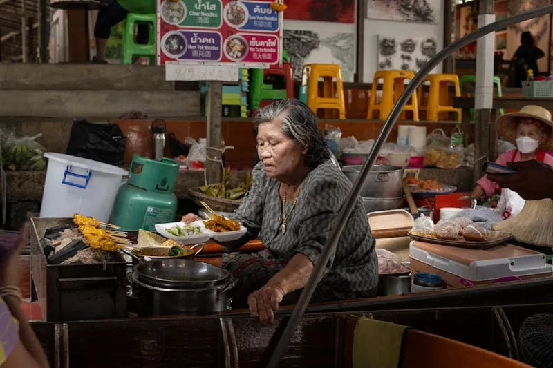

Bangkok has two 3-Michelin-star restaurants. On Saturday, only one is open. Here is everything that follows from that fact.

Modern German (Neue Deutsche Küche) · Thomas & Mathias Sühring

Fine Southern Thai · Chef Supaksorn "Ice" Jongsiri

Traffic lanes close to vendors after dark. The 90-minute crawl through Bangkok's Chinatown, in order:[27]
Rajadamnern Stadium — the original 1945 Muay Thai venue, with weekly fight cards. Tickets 1,600 THB (2nd class) to 4,500 THB (VIP Lounge Wings). Book online — marquee fights sell out.[24]
Bangkok's event calendar is a timing lever. The one worth combining with a dining trip:
If Techsauce timing aligns, book Sühring at least 6 weeks ahead — comfortably within the 60-day window.[8]